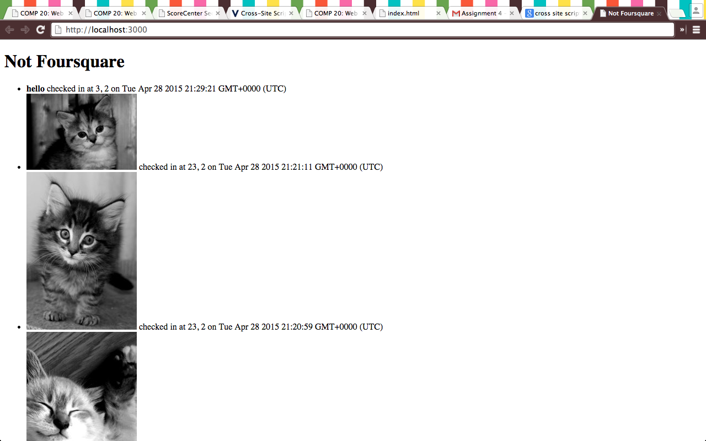
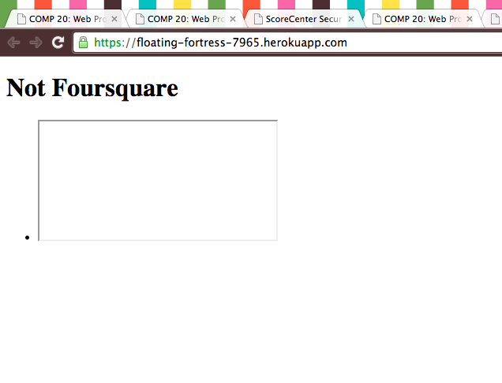
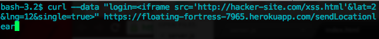

Security Assessment of Marauder's Map Server
Julia Rowe
28 April 2015
Introduction
The following document outlines the security flaws and potential improvements for the marauder map server created by Ming Chow. The application stores and displays usernames, their location (in the form of latitude, longitude), and the time the checked in. It is built to be used as an API for other applications to store and send these locations. These other applications and websites depend on the purity of the data stored in this application, making its security an integral part of its functionaliy.
Methodology
The application was first tested under "black box" conditions, simulating an attacker without access to the source code. Next the code was reviewed and specific parts of the code that seemed vulnerable were attacked.
Findings
The major securities issues found in this website are a result of too much faith in the user input. While there are some precautions in place (ex. latitude must be in the range of -90 to 90 and longitude must be in the range -180 to 180), there are user inputs that can modify the website in annnoying or potentially harmful ways. Additionally, privacy concerns are a huge issue as the website is publically available, allowing everyone to see the stored locations. Additionally, the database is setup in such a way that prevents unwanted items being added to it, saving storage and potentially money.
Issues Found
- Cross-Site Scripting
- Occurs in /sendLocation
- Severity: High. This means any user can input data that has the potential of modifying the html. Modifications to prevent this are simple.
- I found this by sending various curl posts including various html tags. I was able to include images and change the styling of the text. I was also able to send things using the <script> tag which is very dangerous. I also somehow managed to delete everything that was previously stored in the database using the <iframe> tag. The string sent is pictured below along with the resulting changes in the website



- This issue can be resolved by checking the data as it is entered. This could mean not allowing logins with symbols or changing the symbols to their character entities.
- Data Verification
- Occurs on the homepage
- Severity: Medium. It is very easy to enter invalid input. This can be invalid locations as shown in the screen shot, causing the website to be flooded and the database filled with spam wasting space and potentially money. Additionally, based on the current set up, anyone can over write a current user's input. This is a privacy issue for the user.

- This validation could be prevented with comparison to physically realizable locations, howver this could be complicated with new technologies such as wifi on airplanes. The send problem could be fixed with user logins, only allowing logged in users to modify the data associated with their name.
- User Location Privacy
- Occurs on homepage
- Severity: High. The site has no privacy at all regarding user information. There is no validation upon enterning the site at all meaning anyone can access this information that the users would most likely want to keep private.
- This issue could be resolved by making the website either password protected or requiring users login and post their own data before viewing the other data.
Conclusion
This application has already taken some of the steps to keep their website secure. There are some simple steps that could improve security. The best way to make this website secure would be to introduce user logins as user privacy is currently of great concern.